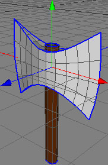
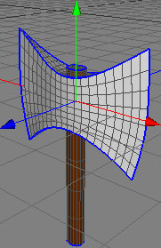
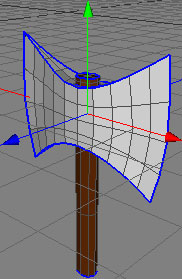
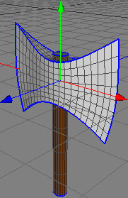
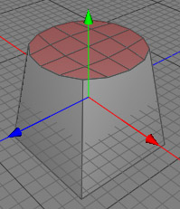
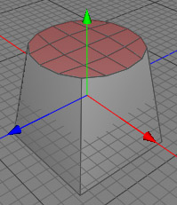

Catmull- Clark Subdivide Tool
The subdivide tool performs a single Catmull-Clark subdivision process on a raw polygon object. It can be used to smooth polygon objects and increase their detail. The subdivide tool retains all crease and polygon selection (material) properties.
For more details about creases and multiple polygon selections, see the raw polygon object.
  
 
Modes
The subdivide tool can only be applied to raw polygon objects. It's behavior in point, edge, polygon and object mode is the same.


To perform a subdivide, you just select a raw polygon object from the object browser and use the menu command "Tools PolygonCatmull-Clark subdivide". Now a Catmull-Clark subdivision process will be performed on the entire mesh. Creases and multiple materials will be retained.
PolygonCatmull-Clark subdivide". Now a Catmull-Clark subdivision process will be performed on the entire mesh. Creases and multiple materials will be retained.
If you are in polygon mode and you've selected some polygons the subdivision will be only performed on the selected polygons.
 

Keys
- none
Properties
- none
Tips
- Use the Subdivision object to perform interactive subdivision modeling, or to use Stam-Loop subdivision processing.